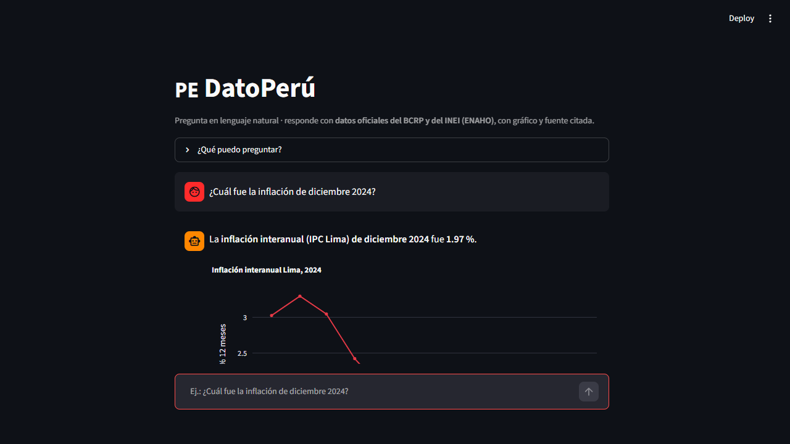
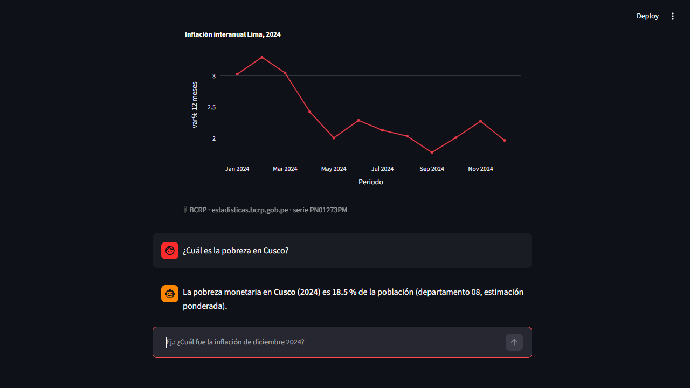
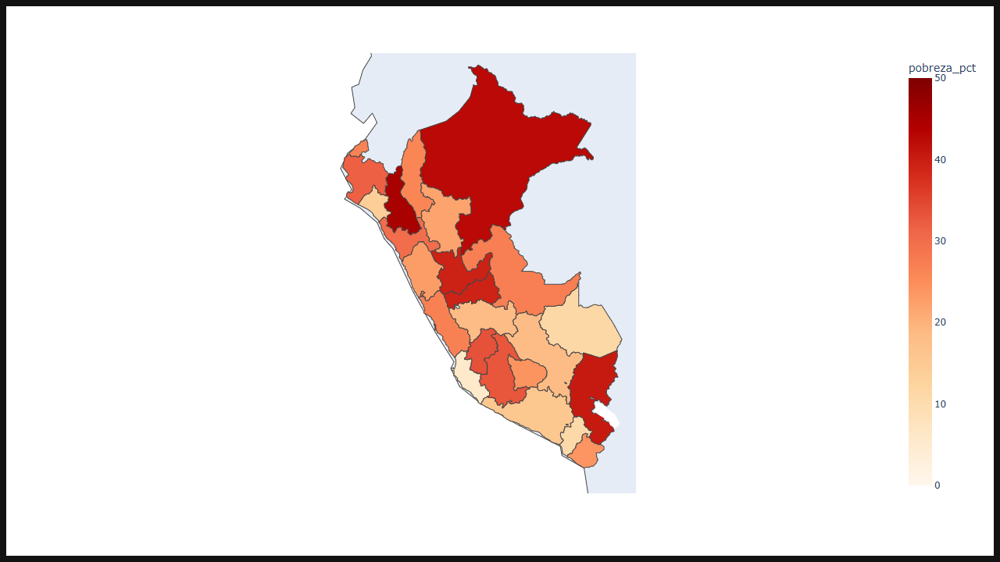

El problema
⏱️ 20–40 minutos por cifra
Encontrar el portal correcto, descargar la serie, depurar y verificar la vigencia de un solo dato oficial toma media hora.
🤖 Los LLMs recuerdan, no citan
Un chatbot genérico da una cifra aproximada de memoria, sin código de serie ni periodo: riesgo de inventar el dato.
✅ DatoPerú: exacto y citable
Cada respuesta trae código de serie del BCRP, factor de expansión de la ENAHO y fecha de consulta. Verificable en un clic.
El demo (video de respaldo, 81 s)
El producto en acción
Inflación de diciembre 2024

Pobreza en Cusco (ENAHO)

Mapa departamental

Cómo funciona
🔌 MCP del BCRP
Catálogo oficial de 17,167 series; descarga y resúmenes calculados con Python (Tarea 4 de la diplomatura, 10/10 pruebas).
🧠 Skills ENAHO
108,664 personas procesadas de la ENAHO 2024 con factor de expansión; validado contra la cifra oficial (27.53 % vs 27.6 %).
🧭 Router determinista
Sin LLM en el camino crítico: cero alucinaciones, cero costo por consulta, respuesta auditable.
Corre el demo en tu laptop (2 minutos)
git clone https://github.com/jonatan-amaya/dato-peru.git
cd dato-peru
pip install streamlit pandas plotly httpx
streamlit run app.py # http://localhost:8501El negocio
Gratis
20 consultas/día para estudiantes y curiosos.
S/ 49/mes · profesional
Consultas ilimitadas, historial y exportación. Periodistas y analistas.
S/ 399/mes · equipos
Municipalidades, ONG y consultoras (10 usuarios, marca blanca).